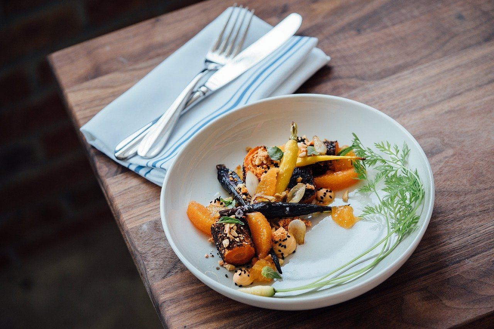
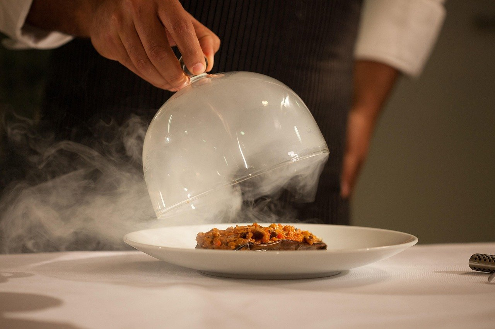
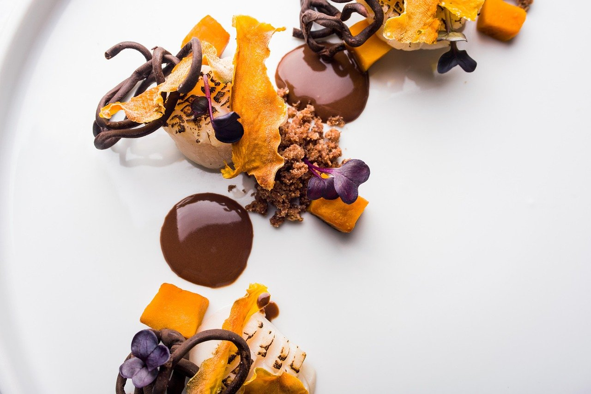
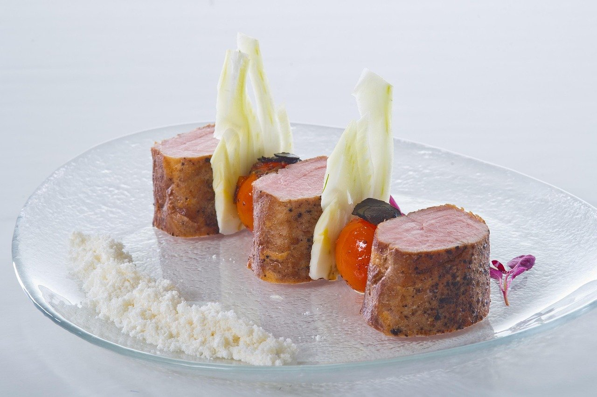
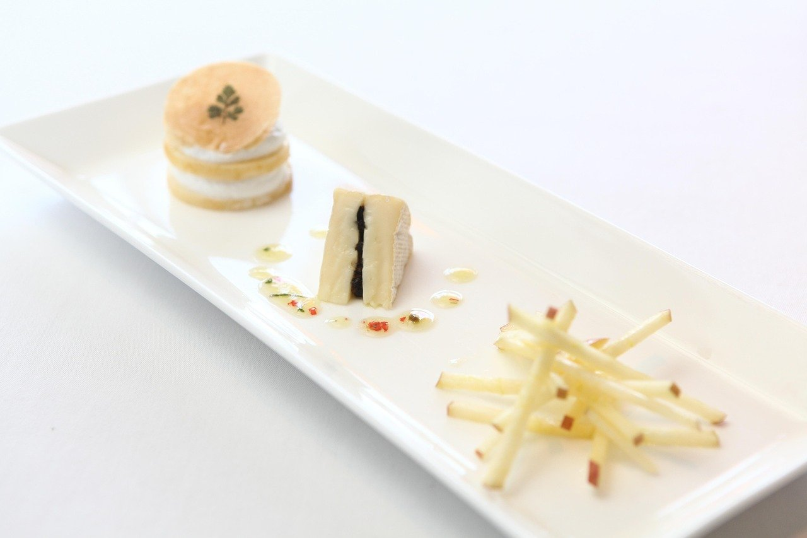

Michelin starred tasting menu dining
Located on West Morehead Street in Charlotte. Reservations are required.
Seatings available Wednesday through Saturday.

A Michelin starred tasting menu in Charlotte
Counter- is a Michelin starred restaurant on West Morehead Street in Charlotte, serving a tasting menu. Reservations are required, and seatings are available Wednesday through Saturday.
Private dining is available for large parties.
- Michelin star
- Recognized with a Michelin star.
- Pairings
- Wine and spirit-free options are available.
- Private dining
- A room for large parties is available.

From the kitchen



Illustrative photos.
Find Counter- on West Morehead Street
2001 West Morehead StreetCharlotte, North Carolina
Reservations are required. Seatings are available Wednesday through Saturday.